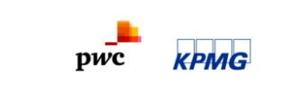
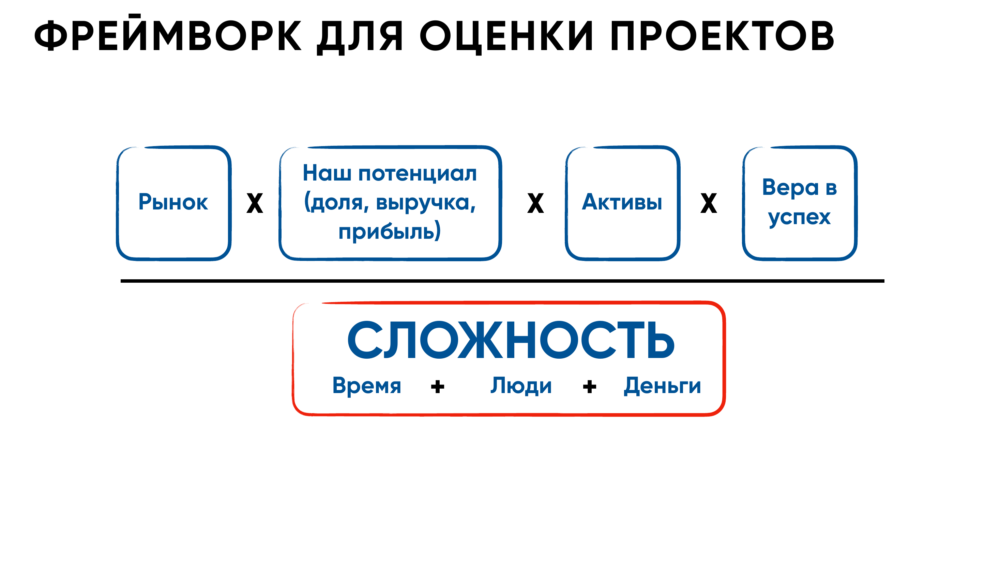
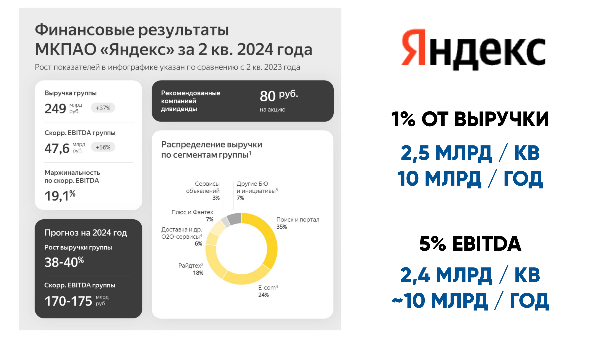
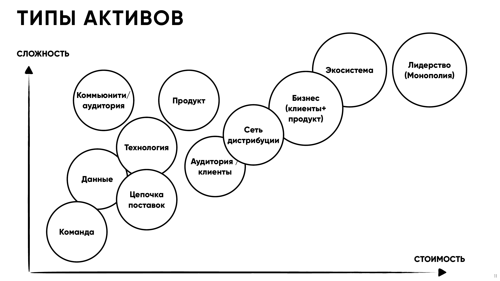
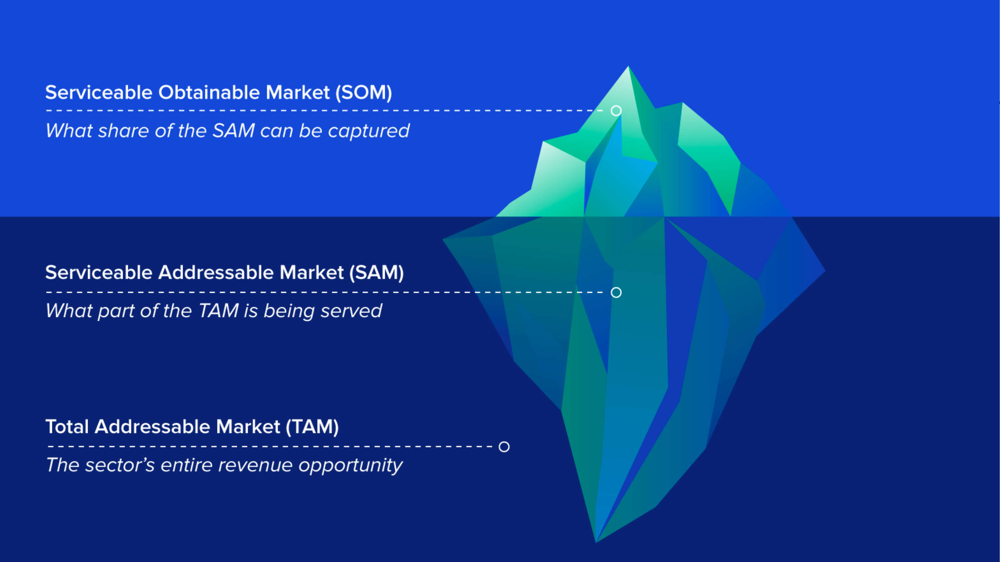
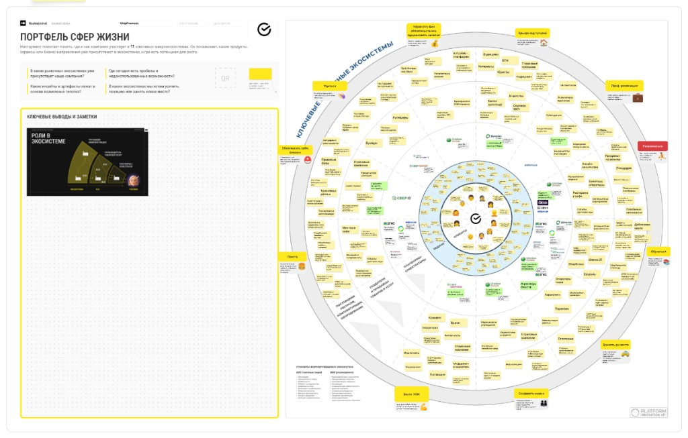

Структурирует расчёт по методологии
Оценка рынка в эпоху AI
Как поставить задачу и не дать AI соврать.
О чем поговорим?
- Зачем оценивать рынок — фреймворк (не устарел)
- Что изменилось: AI как аналитик
- Как правильно поставить задачу AI
- Guardrails: как не дать AI соврать
- Стратегический фильтр
- Качество анализа: рубрика 0–10
- Экосистема Сбера — раздатка для discovery
- Практика: четыре итерации промпта
Максим Калюжный
- Head of Finance
- Ex-Head of Ops
- Co-founder, CFO & B2B Компания продана (exit)
-
Ex-Big 4 аудитор/консультант

Почему оценка рынка важна
Этот блок не устарел — это фреймворк мышления, не метод вычисления.
Рынок × (доля, выручка, прибыль) × Активы × Вера в успех
СЛОЖНОСТЬ = Время + Люди + Деньги

Три вопроса оценки рынка
- Есть ли там деньги? — можно ли монетизировать продукт
- Достаточно ли денег? — связка с существенностью
- Сколько реалистично заработать при текущем продукте и горизонте?
Существенность
Порог: 1% выручки / 5% PBT или EBITDA — калибруйте под компанию.
Пример — Группа Сбер, МСФО 2025
- Операционный доход ≈ 4,4 трлн → 1% ≈ 44 млрд
- Чистая прибыль = 1,7 трлн → 5% ≈ 85 млрд
Источник: пресс-релиз Группы Сбер, февраль 2026

Типы активов
Что именно вы оцениваете — и почему активы меняют всё.

TAM · SAM · SOM
| Метрика | Смысл |
|---|---|
| TAM | Суммарный спрос на продукт или сервис |
| SAM | Целевой сегмент (фокус или география) |
| SOM | Целевая доля в сегменте |

AI как аналитик
Год назад вы искали данные вручную. Сегодня AI делает это за минуты.
Человек не нужен?
Что не так?
Просим AI оценить рынок — например, онлайн-сервисы для ИП в РФ в 2026.
Типичный ответ: TAM = 150 млрд, SAM = 40 млрд, SOM = 5–12 млрд.
Вы бы поставили эти цифры в питч-дек?
Где остаётся человек
AI отлично генерирует убедительно выглядящие ответы.
AI не знает, когда он врёт.
Ваша задача — грамотно ставить задачу / проверять / устанавливать границы.
Что AI умеет
Делает хорошо
Быстро синтезирует публичные данные
Считает 3 сценария за 2 минуты
Генерирует adversarial критику себя
…а что — нет
Делает плохо
Придумывает ссылки (hallucination)
Путает РФ-данные после 2022
Не замечает устаревшие данные
Убедительно округляет — 100 млрд, 50%
Framing > Prompting
Не «напиши промпт», а «сформулируй задачу так, чтобы AI не мог уйти в сторону».
| Плохой запрос | Хороший запрос |
|---|---|
| «Оцени рынок доставки еды» | «Оцени рынок B2C доставки готовой еды в городах РФ 500+ тыс. чел., 2025–2026, метод bottom-up» |
| «Сколько клиентов?» | «Оцени кол-во ИП в РФ, использующих онлайн-бухгалтерию, на основе данных ФНС и открытых отчётов» |
Четыре правила постановки задачи
1 Определи границы
Продукт, сегмент, гео, период. Без этого AI считает мировой рынок всего.
Продукт, сегмент, гео, период. Без этого AI считает мировой рынок всего.
2 Укажи метод
«Посчитай bottom-up: клиенты × чек × частота». AI следует инструкции, не угадывает.
«Посчитай bottom-up: клиенты × чек × частота». AI следует инструкции, не угадывает.
3 Потребуй источники
«Каждую цифру: источник + год». Делает галлюцинации видимыми.
«Каждую цифру: источник + год». Делает галлюцинации видимыми.
4 Задай формат
«Таблица TAM/SAM/SOM + допущения + источник». Убирает свободу трактовки.
«Таблица TAM/SAM/SOM + допущения + источник». Убирает свободу трактовки.
Chain of Thought для рынка
Заставить AI сначала показать допущения, потом считать. Если допущение бредовое — вы видите его до финальной цифры.
Прежде чем считать TAM, перечисли: 1. Все ключевые допущения (минимум 5) 2. Что ты НЕ знаешь точно и откуда берёшь данные 3. Какой метод используешь и почему После этого — считай.
Как не дать AI соврать
5 инструментов верификации. Используйте все пять — не выбирайте один.
1 Sanity check через публичные компании
2 Adversarial validation
3 Order-of-magnitude check
4 Проверка на устаревание
5 Агент vs LLM
Sanity check через публичного игрока
Берём рынок, где есть операторы с раскрытой отчётностью — например мобильная связь / телеком РФ.
Пример. AI выдал завышенный TAM по рынку услуг связи для населения.
Возьмите выручку сегмента «Россия» у МТС или «Билайн» (ВымпелКом) из годового отчёта (IFRS), оцените долю оператора на рынке (аналитика / отраслевые обзоры) → рынок ≈ выручка ÷ доля. Сравните порядок величины с TAM от AI.
Источник цифр: годовые отчёты МТС, VEON (ВымпелКом); доля — из комментариев к отчётности или отраслевых срезов.
Применимо к любому рынку с публичным игроком и понятной долей:
Сбер, Ozon, Wildberries, МТС, ВымпелКом, HeadHunter, ЦИАН, VK, Fix Price
Adversarial validation
Новый чат. Новый контекст. Попросить AI раскритиковать первый расчёт:
Вот анализ рынка: [вставить] Выступи в роли скептичного инвестора. Найди: 1. Три главные ошибки или слабые допущения 2. Цифры без источника / подозрительно круглые 3. Что не учтено: конкуренция, регуляторика, пост-2022 изменения 4. Как бы ты пересчитал?
Order-of-magnitude check
Здравый смысл без формулы. Ответьте вслух — без AI.
- SOM = 10 млрд при команде из 5 человек → реалистично?
- Проникновение 40% за год в новом рынке → не слишком оптимистично?
- «Рынок вырос в 3× за 2 года» → что произошло, или AI выдумал?
Проверка на устаревание
РФ-рынки после 2022 изменились кардинально. Требуйте явно:
Используй только данные за 2025–2026. Если данных за этот период нет — скажи явно. Не экстраполируй тренды из 2021–2022 для РФ-рынка.
Агент vs LLM
| Инструмент | Когда использовать |
|---|---|
| Агент с поиском (Perplexity, ChatGPT Search) | Первичный поиск: цифры, ссылки, свежие данные |
| Gemini Deep Research | Глубокий синтез большого объёма источников |
| Claude / GPT 5.4 | Структурирование, расчёт, adversarial review |
Чеклист «красных флагов»
Если видите — остановитесь и перепроверьте вручную.
Нет ссылок на источники → скорее всего выдумка
Все цифры «круглые» (100 млрд, 50%, 10 млн) → нет реальных данных
«По данным отраслевых исследований» без названия → классическая галлюцинация
Красные флаги — продолжение
Описание рынка слишком общее → AI не нашёл конкретику
Нет диапазона / uncertainty → AI притворяется, что точно знает
Данные 2021–2022 для РФ-рынка → мир изменился
Красные флаги — финал
SOM > 30% SAM с первого года → нереалистично
Ссылка на Statista / Grand View без реальной цитаты → AI не видел эти данные
Ориентир — внутренняя стратегия
Когда оцениваете рынок внутри Группы, сверяйтесь с приоритетами / преимуществами / ограничениями экосистемы (не с «мировым TAM всего»).
Ссылка: Публичная презентация стратегии до 2026 года
Ключевое слово: Человекоцентричность
Основные акценты:
- Жизненные сценарии клиента — не набор разрозненных продуктов, а связанные сервисы вокруг повседневных задач (в т.ч. пространства вроде «Для жизни», мини-экосистемы «Дом», «Авто», «Семья и безопасность»).
- Глубина и частота — проникновение продуктов, удовлетворённость, NPS, SLTV как опора долгосрочной модели.
- Финансовые и нефинансовые сервисы в одном контуре — единая точка входа и кросс-использование.
- Технологии и ИИ — персонализация, скорость и эффективность (в связке с целями Группы на горизонт нескольких лет).
Попадание в стратегию — черновик промпта
«Вера в успех» из формулы — это стратегическое попадание. Его можно явно прогнать через LLM — но решение всё равно за человеком.
Вот анализ рынка X: [вставить] Вот стратегические приоритеты компании: [из IR, материала по ссылке выше или внутреннего документа] Ответь: 1. Три причины, почему этот рынок ПОДХОДИТ стратегии 2. Три причины, почему НЕ подходит 3. Какие активы уже есть для входа? 4. Что нужно приобрести или построить?
Решение — за человеком. AI даёт аргументы. Вы выбираете. Это правило не изменится.
Рынок мал, но идея нравится
Вернуться к формуле. Посмотреть на активы и стратегическое попадание.
Иногда 5 млрд в правильном направлении важнее 50 млрд в чужом рынке.
Внутренние критерии и рубрика 0–10
Перед тем как верить цифрам в отчёте — четыре обязательные проверки.
- TAM / SAM / SOM заданы явно и согласованы с расчётом (не «голые» числа).
- Воронка SAM очищена от нецелевых сегментов и каналов.
- SOM согласован с конкурентами и реалистичной долей, а не «желаемым» процентом.
- Горизонт выхода на целевой SOM обоснован (команда, канал, инвестиции), а не произвольный год.
Полнота и качество (сумма = X / 10)
| Критерий | Баллы | О чём судим |
|---|---|---|
| a | 0–3 | Прозрачность и согласованность TAM/SAM/SOM с методом и допущениями. |
| b | 0–3 | Качество сегментации SAM: кого исключили из воронки и почему. |
| c | 0–3 | Учёт конкурентов и альтернатив при оценке SOM. |
| d | 0–1 | Обоснованность срока достижения заявленного SOM. |
Итого: a + b + c + d = X / 10 — в skill агент выводит эту таблицу после основного отчёта.
Портфель сфер жизни («ромашка»)
Раздатка в Markdown — для product discovery: прогоните свой продукт по схеме, найдите лепесток, где логична точка входа, кто может быть ЛПР, с кем стоит поговорить в B2B-цепочке.
handouts/sber-ecosystem-life-spheres.md

Один продукт, один рынок
Дальше — четыре слайда: как усложняется промпт от «на отмашку» до почти полного skill. Листайте стрелками.
Файлы после лекции — шпаргалка и раздатка экосистемы.
Минимальный запрос
Что на этой стадии
- Нет границ рынка и метода — модель «размазывает» ответ.
- Полезно как демо галлюцинаций, не как вход в решение.
Оцени рынок онлайн-бухгалтерии для ИП в России.
+ Метод и воронка
Что добавили
- Явные TAM / SAM / SOM, география, период.
- Метод: bottom-up или top-down — чтобы AI не выбрал «по умолчанию».
Оцени рынок онлайн-бухгалтерии для ИП в РФ. География: РФ, города 100+ тыс. жителей. Период: 2025–2026. Метод: bottom-up (число ИП × доля онлайн × ARPU). Верни таблицу TAM, SAM, SOM с допущениями по строкам.
+ Источники и проверка
Что добавили
- Chain of Thought: допущения до цифр.
- Источник + год; таблица; явные красные флаги.
Прежде чем считать TAM/SAM/SOM, перечисли минимум 5 допущений и неизвестные. Затем посчитай bottom-up для РФ, 2025–2026. Каждую цифру сопроводи источником и годом. В конце — список красных флагов по чеклисту из лекции.
+ Конкуренты и оценка по рубрике
Что добавили
- Конкуренты и альтернативы; второй проход — adversarial review.
- Просьба выставить баллы a–d и итог X / 10 (как на слайде «Качество»).
После расчёта назови 3–5 ключевых игроков и их влияние на реалистичный SOM. Запусти adversarial review своего же ответа (новый чат). В конце выведи таблицу оценки по рубрике a–d с комментариями и суммой X/10.
Дальше — самостоятельно: возьмите свой продукт, пройдите шаги из итерации 4, затем проверьте отчёт по рубрике и чеклисту на слайде «Шпаргалка».
Do
DoОпредели границы до запроса
DoПотребуй источники с годом
DoChain of Thought — допущения сначала
DoAdversarial review (второй проход)
DoSanity check через публичную компанию
DoТри метода — AI считает все три за 2 мин
DoЯвно задавать горизонт данных (2025–2026)
Don't
Don't«Оцени мне рынок» без контекста
Don'tВерить круглым цифрам без ссылок
Don'tОдин промпт → один ответ → «готово»
Don'tКопировать первый ответ в питч-дек
Don'tИгнорировать здравый смысл
Don'tДоверять одному методу
Don'tЗабывать, что РФ-рынки изменились
Шпаргалка
Заберите в работу: workflow, промпты, guardrails — как в материалах курса.
Skill для AI-агента
Пошаговый сценарий, шаблоны запросов, валидация, рубрика 0–10 и формат отчёта на русском. Положи рядом с проектом или подключи как Cursor skill.
Экосистема Сбера («ромашка»)
Текстовая раздатка для product discovery: куда вписывается продукт, ЛПР, с кем говорить.
Чеклист для себя
Фрейминг, красные флаги, порядок величин — то, что проверяешь ты, а не модель.
Консультация
Дата
5 мая
Дедлайн
30 апреля — прислать материалы / расчёт
У каждой команды 8–10 минут ОС по анализу рынка и ответы на вопросы. Ссылку на загрузку дадут организаторы.
Спасибо за внимание
Максим Калюжный · TG @max_kalyuzhnyi · +351 93 783 8051